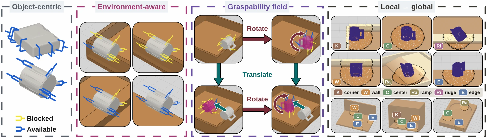
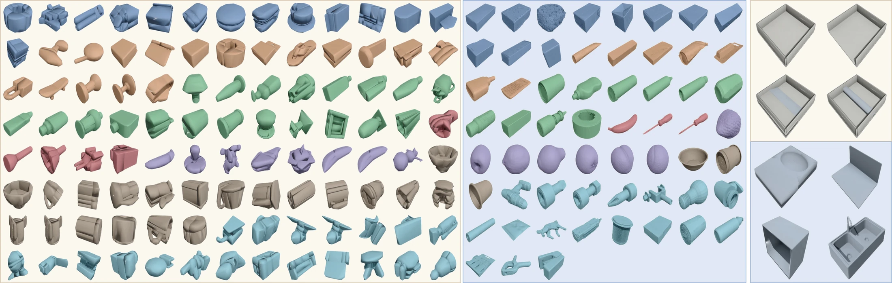
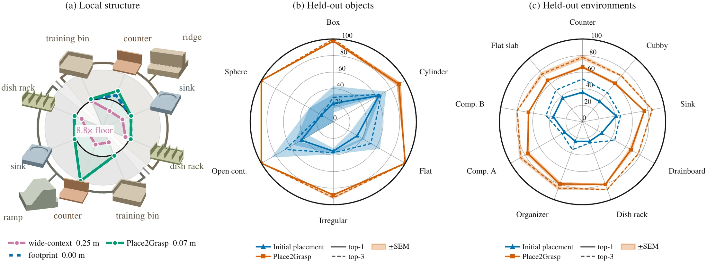

Grasping an object in real-world environments requires reasoning about both the grasps afforded by the object geometry and the subset of those grasps that the environment leaves accessible. When the object's current placement blocks otherwise valid grasps, the robot must determine where in the environment it should be placed to make those grasps accessible. Existing approaches either reason about graspability without modeling environment geometry, leave placement selection implicit within an end-to-end policy, or restrict reconfiguration to a prescribed action space.
We present Place2Grasp, which learns a local, bi-equivariant field that generates explicit full-SE(3) object-placement goals conditioned on the local scene geometry. A learned selector ranks the candidates by whether they settle stably and by the graspability of the resulting configuration. We evaluate the method on an object benchmark that varies difficult resting placements within a fixed bin and an environment benchmark that transfers matched wall-adjacent placements across multiple environments.
In simulation, our method achieves the highest overall held rate on both benchmarks, improving over direct grasping by 55.6% and 55.1%, respectively, and outperforming the compared pre-grasp approaches. Further experiments validate locality and equivariance and demonstrate transfer of the simulation-trained model to a physical robot.
Graspability depends jointly on the object and its local surroundings

Local placement generation and scene-wide selection
Objects and environments
3.66M scored grasps across 316 DexGraspNet meshes, 253,836 labeled placements, and 169,590 low-to-high-graspability placement transitions organized by local scene feature.

Held rate on the object and environment benchmarks
Object benchmark: 113 objects at their ten lowest-graspability placements in a closed bin. Environment benchmark: 56 objects at three wall-adjacent placements across four scenes. A trial succeeds if the object stays held through a 12 cm lift, transfer and wrist roll. Mean over three seeds, ± SEM where shown; highlighted entries are best within SEM.
| Object benchmark | Environment benchmark | ||||||||||||
|---|---|---|---|---|---|---|---|---|---|---|---|---|---|
| Method | Box | Cyl. | Rod | Flat | Irreg. | Open | Sph. | Overall | Bin | Edge | Ramp | Ridge | Overall |
| GG (direct grasp) | .471 | .493 | .638 | .552 | .638 | .683 | .547 | .573 ±.013 | .383 ±.004 | .556 ±.016 | .577 ±.021 | .407 ±.012 | .481 ±.003 |
| GOMP | .710 | .872 | .867 | .922 | .903 | .852 | .893 | .861 ±.006 | .409 ±.009 | .571 ±.012 | .552 ±.007 | .448 ±.014 | .495 ±.006 |
| OmniReset | .479 | .800 | .771 | .748 | .813 | .783 | .887 | .751 ±.004 | .377 ±.009 | .589 ±.021 | .565 ±.000 | .444 ±.015 | .494 ±.006 |
| PreAfford-Or | .665 | .800 | .829 | .763 | .815 | .867 | .927 | .802 ±.004 | .562 ±.015 | .688 ±.004 | .714 ±.016 | .599 ±.005 | .641 ±.007 |
| Place2Grasp (ours) | .800 | .900 | .962 | .893 | .927 | .895 | .890 | .891 ±.003 | .833 ±.021 | .827 ±.009 | .712 ±.012 | .609 ±.037 | .746 ±.006 |
GOMP uses a policy trained with object-centric graspability; OmniReset learns reorientation end to end; both are retrained on our objects and environments. PreAfford-Or samples 32 collision-free horizontal pushes, executes them as ideal forces and keeps the best result. Every method ends with the same final grasp stage.
Local conditioning holds across scenes, and placements transfer to unseen objects and environments

Simulation-trained, deployed on a real robot
The simulation-trained model is deployed without real-world fine-tuning in a physical bin with three enclosed sides and one open edge. Five everyday objects, ten varied initial placements each; a trial succeeds when the system reconfigures the object to its selected placement and completes the grasp.
| Object | Box | Tape | Bottle | Stapler | Spoon |
|---|---|---|---|---|---|
| Success | 8/10 | 10/10 | 10/10 | 10/10 | 10/10 |
Recorded runs
Ten runs per object, played at 2× speed with most planning pauses cut. The table above reports the per-object outcomes.
Simulation rollouts
Single attempt from a hard starting placement: reorient, then grasp, lift, carry and roll the wrist. The green ghost marks the selected placement.
@article{anonymous2026place2grasp,
title = {Place2Grasp: Equivariant Local Graspability Fields for
Generalizable Scene-Wide Object Placement},
author = {Anonymous},
journal = {Under review},
year = {2026}
}